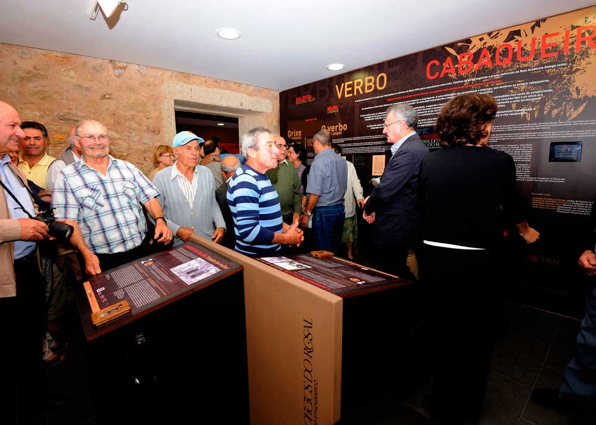
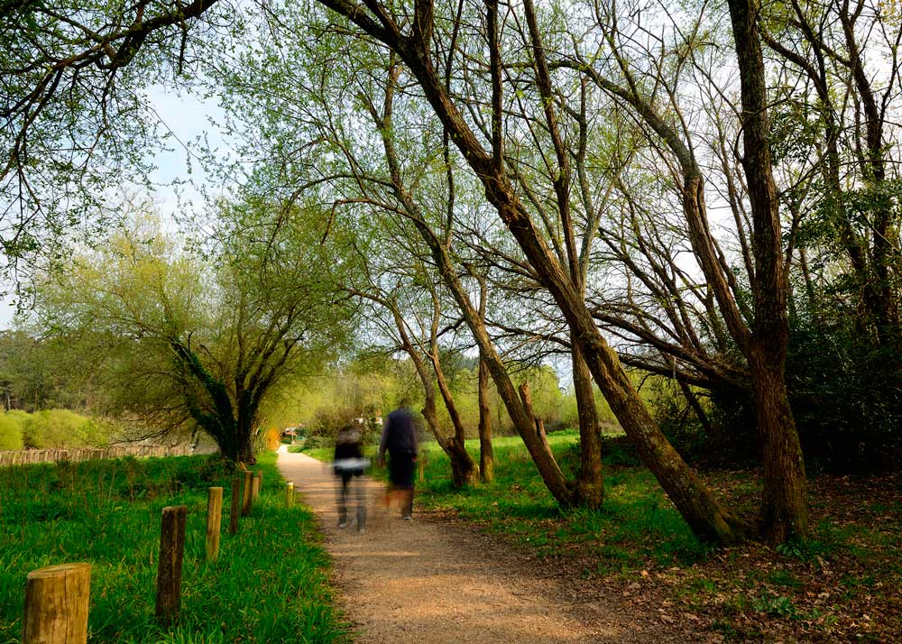

MOLINOS DEL FOLÓN Y DEL PICÓN
 Categoría: Patrimonio arquitectónico y etnográfico. Localización: 41.96190207, -8.840902221. El conjunto histórico-etnográfico de los Molinos de Folón y de Picón esta formado por 67 molinos de agua en perfectas condiciones, dispuestos en hilera en un enclave natural inigualable. Fueron declarados Bien de Interés Cultural en el año 1998, y en la actualidad existe un sendero de pequeño recorrido reconocido por la Federación Gallega de Montañismo (PR-G-94) Categoría: Patrimonio arquitectónico y etnográfico. Localización: 41.96190207, -8.840902221. El conjunto histórico-etnográfico de los Molinos de Folón y de Picón esta formado por 67 molinos de agua en perfectas condiciones, dispuestos en hilera en un enclave natural inigualable. Fueron declarados Bien de Interés Cultural en el año 1998, y en la actualidad existe un sendero de pequeño recorrido reconocido por la Federación Gallega de Montañismo (PR-G-94)
|
CENTRO ETNOGRÁFICO
Categoría: Patrimonio arquitectónico y etnográfico. Localización: 41.936995, -8.83628. El Centro Etnográfico «OS Cabaqueiros» se sitúa en las inmediaciones de la Plaza del Calvario, en el centro de la localidad de O Rosal. En el podemos encontrar una exposición permanente en recuerdo de los tejeros rosalinos (cabaqueiros), considerados los herederos de los ceramistas romanos que ocuparon la comarca. Ofrece un recorrido histórico a través de un oficio ancestral practicado por muchas personas dentro y fuera de Galicia.
|
SENDERO DE PESCADORES
Categoría: Patrimonio natural. Localización: 41.92325201, -8.786015578. Constituye un sendero natural de 7,2 km que recorre la ribera del rio Miño y su afluente el Tamuxe. Comienza en la parroquia de Eiras y avanza hasta la desembocadura del Rio Tamuxe. El recorrido destaca por su patrimonio natural, su vegetación y sus paisajes. El sendero está homologado por la Federación Gallega de Montañismo como de baja dificultad.
|